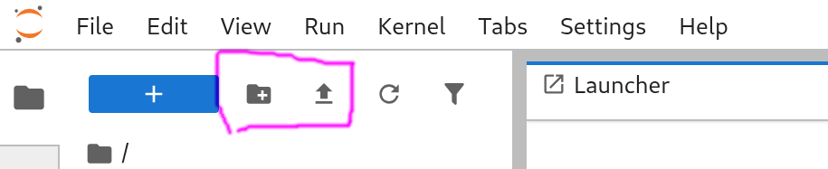
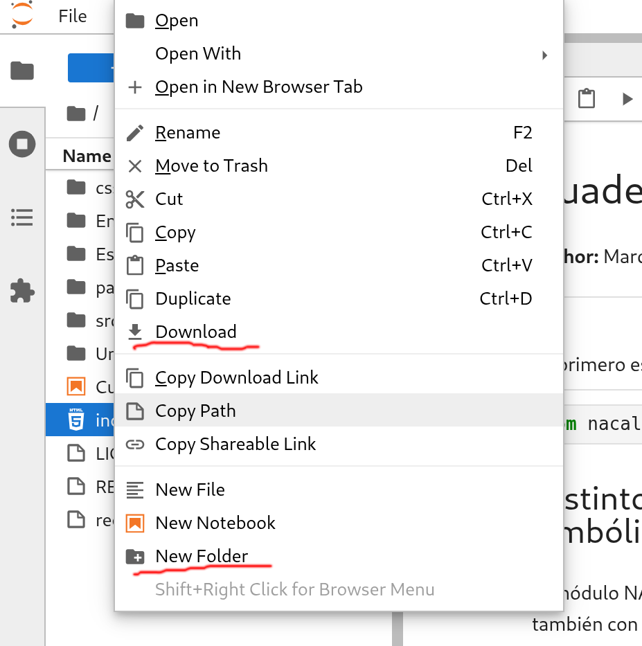

Cuaderno electrónico para pasar notas de Moodle a las actas de GEA
1. Primer paso
La función de_Moodle_a_actas requiere el uso del módulo pandas.
También debemos cargar el script de Python de_moodle_a_actas.py.
Para cargar tanto el módulo como el script, ejecuta la siguiente celda de código.
import pandas as pd %run de_moodle_a_actas.py
2. Ejemplo para que lo edites y lo adaptes a tu caso
Importante: Antes de usar el siguiente bloque de código, lee la sección 3 (Cómo usar el programa). Luego:
- Crea la carpeta del grupo (por ejemplo
grupoA) y sube a dicha carpeta los archivos Excel que has descargado desde Moodle y GEA. - Luego edita las cadenas de texto de este bloque de código con los nombres correctos tanto de la carpeta como de los archivos Excel. Si ejecutas el siguiente bloque de código sin editar correctamente los nombres, obtendrás un error.
subdirectorio = 'grupoLetra' # esta carpeta debe estar creada con antelación ficheroGEA = 'NombreDelArchivoDescargadoDesdeGEA.xls' # no te olvides de la extensión del archivo (xls) ficheroMoodle = 'NombreDelArchivoDescargadoDesdeMoodle.xlsx' # no te olvides de la extensión del archivo (xlsx) columnaNotas = 'NombredeLaColumnaConLasNotasParaActas' # Pasa a actas la columna de calificaciones correcta actasParaSubirAGEA = 'NombreFicheroASubir.xls' # el fichero (xls) con las notas que subirás a GEA de_Moodle_a_actas( subdirectorio + '/' + ficheroMoodle, subdirectorio + '/' + ficheroGEA, columnaNotas).to_excel(subdirectorio + '/' + actasParaSubirAGEA, index=False)
Nota: Desde Moodle se descargan archivos con extensión xlsx, pero desde GEA puede que la extensión sea xls.
2.1. Ejemplo de actas de un grupo ficticio "Alpha".
Dado que en la carpeta GrupoAlpha de este repositorio hay dos archivos Excel similares a los que se obtienen en Moodle y GEA, si ejecutas este bloque se generará un nuevo fichero acta-grupo-alpha.xls creado a partir de los dos archivos Excel de la carpeta GrupoAlpha donde las notas están cumplimentadas y listas para ser subidas a GEA (si dicho grupo y alumnos fueran reales).
subdirectorio = 'GrupoAlpha' ficheroGEA = 'CalificacionExcel.xls' ficheroMoodle = '00-123456-Calificaciones.xlsx' columnaNotas = 'Total ConvocatoriaOrdinaria (Real)' actasParaSubirAGEA = 'acta-grupo-alpha.xls' de_Moodle_a_actas( subdirectorio + '/' + ficheroMoodle, subdirectorio + '/' + ficheroGEA, columnaNotas).to_excel(actasParaSubirAGEA, index=False)
Es probable que obtengas un mensaje de advertencia, porque el método para crear ficheros con la antigua extensión xls que utiliza de_moodle_a_actas.py está obsoleto. No obstante, en el momento de creación de este cuaderno electrónico, dicho método aún funcionaba (a pesar del mensaje de advertencia).
(Esto quiere decir que si GEA continúa funcionando solo con la obsoleta extensión xls, este programa dejará de funcionar en algún momento).
3. Cómo usar el programa
3.1. Paso previo
Obtener los archivos Excel del grupo
- Accede a https://geaportal.ucm.es/index.html (si estás fuera de la UCM, deberás activar la VPN).
- Ve a Calificación de actas.
- Descarga el archivo Excel con las actas vacías del grupo a calificar (
CalificacionExcel.xls). - Descarga las calificaciones de tu grupo desde Moodle en un archivo Excel (por ejemplo,
aa-abcdef-Calificaciones.xlsx).
Si necesitas cumplimentar las actas de varios grupos, es recomendable guardar los dos archivos Excel correspondientes a cada grupo en un subdirectorio distinto para cada grupo (véase el siguiente punto).
Crear un directorio para los archivos del grupo
Para crear un nuevo directorio, haz clic en el ícono de carpeta que tiene el signo más (+) y que está ubicado en la parte superior de la columna izquierda. Si no ves la columna, puedes mostrarla haciendo clic en el ícono de la carpeta que está a la derecha.

- Alternativamente, puedes crear un directorio utilizando el menú emergente que aparece al hacer clic con el botón derecho en la columna izquierda.
Subir los archivos de Excel obtenidos desde Moodle y GEA
Para subir tus archivos de Excel a la carpeta recién creada, haz clic en la flecha hacia arriba que se encuentra a la derecha del ícono de carpeta que tiene el signo más (+). Esto te permitirá cargar los archivos en el directorio adecuado para la calificación de tu grupo.
Ejecutar el código y descargar las actas para poder subirlas a GEA
Ejecuta el código que aparece más abajo y después descarga el archivo Excel con las actas que se habrá generado en el repositorio virtual de MyBinder (utiliza el menú emergente que aparece al hacer clic con el botón derecho en la columna izquierda). Una vez descargadas las actas, puedes subirlas a GEA.

3.2. Ejemplo de uso
Supongamos que el archivo descargado desde Moodle es ./GrupoAlpha/00-123456-Calificaciones.xlsx (donde ./GrupoAlpha/ es la ruta hasta el archivo). Y que las calificaciones finales que se van a incluir en las actas se encuentran en la columna con la cabecera Total ConvocatoriaOrdinaria (Real).
Además, el archivo con las actas sin cumplirmentar es ./GrupoAlpha/CalificacionExcel.xls.
(La carpeta y los archivos Excel del grupo ficticio Alpha ya están creados en la carpeta GrupoAlpha del repositorio para que puedas probar este ejemplo).
Entonces, basta con ejecutar lo siguiente:
notasConvocatoriaOrdinariaGrupoAlpha = de_Moodle_a_actas('./GrupoAlpha/00-123456-Calificaciones.xlsx', './GrupoAlpha/CalificacionExcel.xls', 'Total ConvocatoriaOrdinaria (Real)')
donde notasConvocatoriaOrdinariaGrupoAlpha es el nombre del DataFrame con la estructura de las actas, que estará cumplimentado con las notas de Moodle. Para ver el resultado:
print(notasConvocatoriaOrdinariaGrupoAlpha)
Para guardar el DataFrame en un archivo Excel, se recomienda usar un nombre claro (así no habrá confusiones al subirlo a https://geaportal.ucm.es).
nombreFichero = 'actaOrdinariaGrupoAlpha' notasConvocatoriaOrdinariaGrupoAlpha.to_excel(nombreFichero + '.xlsx', index=False) # Guarda el DataFrame en un archivo Excel print(f"El archivo Excel {nombreFichero}.xlsx se ha guardado correctamente.")
El archivo Excel que hemos creado se puede cargar en la página donde se rellenan las actas del grupo y asignatura correspondiente (haciendo clic en el enlace "Cargar/descargar fichero Excel").
Ahora vuelve a la sección 2 y prueba con los archivos Excel de tus grupos.